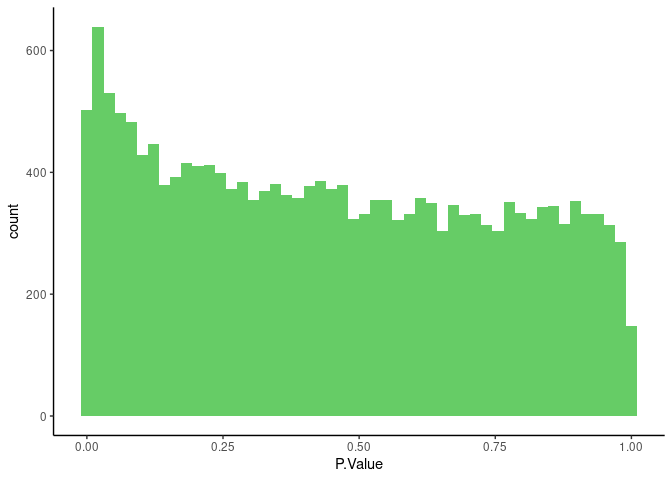
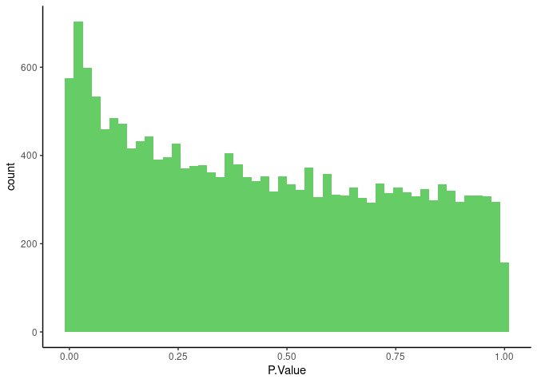
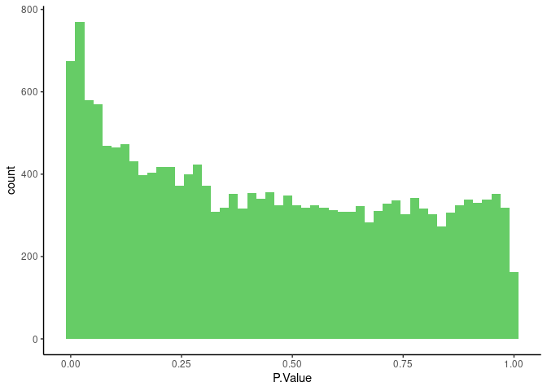

Last updated: 2024-08-28
Checks: 7 0
Knit directory: rta/
This reproducible R Markdown analysis was created with workflowr (version 1.7.0). The Checks tab describes the reproducibility checks that were applied when the results were created. The Past versions tab lists the development history.
Great! Since the R Markdown file has been committed to the Git repository, you know the exact version of the code that produced these results.
Great job! The global environment was empty. Objects defined in the global environment can affect the analysis in your R Markdown file in unknown ways. For reproduciblity it’s best to always run the code in an empty environment.
The command set.seed(20200501) was run prior to running
the code in the R Markdown file. Setting a seed ensures that any results
that rely on randomness, e.g. subsampling or permutations, are
reproducible.
Great job! Recording the operating system, R version, and package versions is critical for reproducibility.
Nice! There were no cached chunks for this analysis, so you can be confident that you successfully produced the results during this run.
Great job! Using relative paths to the files within your workflowr project makes it easier to run your code on other machines.
Great! You are using Git for version control. Tracking code development and connecting the code version to the results is critical for reproducibility.
The results in this page were generated with repository version e31e9f6. See the Past versions tab to see a history of the changes made to the R Markdown and HTML files.
Note that you need to be careful to ensure that all relevant files for
the analysis have been committed to Git prior to generating the results
(you can use wflow_publish or
wflow_git_commit). workflowr only checks the R Markdown
file, but you know if there are other scripts or data files that it
depends on. Below is the status of the Git repository when the results
were generated:
Ignored files:
Ignored: .Rhistory
Ignored: .Rproj.user/
Ignored: code/.Rapp.history
Ignored: data/.Rhistory
Ignored: data/RDS/
Ignored: run/
Untracked files:
Untracked: LICENSE
Untracked: Rplot.pdf
Untracked: SENSI_chr7_snps.R
Untracked: Untitled.R
Untracked: analysis/17_mapping_interpretation_old.Rmd
Untracked: analysis/temp.txt
Untracked: code/DO_IVSA_SALINE_pleiotropy.R
Untracked: code/DO_IVSA_SENS_pleiotropy.R
Untracked: code/DO_SENS_SALINE_pleiotropy.R
Untracked: code/DO_eQTL_perms.R
Untracked: code/DO_eQTL_score_calc.R
Untracked: code/SENSI_chr7_snps.R
Untracked: code/STAR_RSEM_416.sh
Untracked: code/eQTL_plotting_DO_striatum_416.R
Untracked: code/ggplot_pub_themes.R
Untracked: code/pleitropy_analysis.sbatch
Untracked: code/pleitropy_saline_analysis.sbatch
Untracked: code/pleitropy_sensi_saline_analysis.sbatch
Untracked: code/rta_mapping_figure_leftover.R
Untracked: data/20_elastic_mv_results.csv
Untracked: data/20_elasticnet_predictions.RDS
Untracked: data/DO_416_DGEList.RDS
Untracked: data/DO_416_DGEList_unfiltered (michael.saul@jax.org 2).RDS
Untracked: data/DO_416_DGEList_unfiltered (michael.saul@jax.org 3).RDS
Untracked: data/DO_416_DGEList_unfiltered (michael.saul@jax.org 4).RDS
Untracked: data/DO_416_DGEList_unfiltered (michael.saul@jax.org).RDS
Untracked: data/DO_416_DGEList_unfiltered.RDS
Untracked: data/DO_416_ERCC_DGEList.RDS
Untracked: data/DO_416_ERCC_cpm.RDS
Untracked: data/DO_416_normrt.RDS
Untracked: data/DO_416_pheno.RDS
Untracked: data/DO_416_pheno_allgenes.RDS
Untracked: data/DO_416_voom (michael.saul@jax.org).RDS
Untracked: data/DO_416_voom.RDS
Untracked: data/DO_416_voom_allgenes (michael.saul@jax.org 2).RDS
Untracked: data/DO_416_voom_allgenes (michael.saul@jax.org).RDS
Untracked: data/DO_416_voom_allgenes.RDS
Untracked: data/DO_416_voom_cpresiduals.RDS
Untracked: data/DO_AQ_active_CoV_toptable_annotated.RDS
Untracked: data/DO_AQ_lever_ratio_toptable_annotated.RDS
Untracked: data/DO_AQ_mean_inf_toptable_annotated.RDS
Untracked: data/DO_AQ_rate_toptable_annotated.RDS
Untracked: data/DO_IVSA_SALINE_pleio_lods.RDS
Untracked: data/DO_IVSA_SENS_pleio_lods.RDS
Untracked: data/DO_IVSA_SENS_pleio_pvl.RDS
Untracked: data/DO_IVSA_acquisition_cancor_df.RDS
Untracked: data/DO_IVSA_acquisition_logit_df.RDS
Untracked: data/DO_IVSA_acquisition_logit_glm.RDS
Untracked: data/DO_IVSA_all_cancor_df.RDS
Untracked: data/DO_IVSA_all_cancor_df_2024-03-27.RDS
Untracked: data/DO_IVSA_all_cancor_df_2024-03-29.RDS
Untracked: data/DO_IVSA_data.RDS
Untracked: data/DO_IVSA_data_2024-03-29.RDS
Untracked: data/DO_IVSA_novelty_cancor_ALL.RDS
Untracked: data/DO_IVSA_novelty_cancor_ALL_2024-03-29.RDS
Untracked: data/DO_IVSA_novelty_cancor_AQ.RDS
Untracked: data/DO_IVSA_novelty_data.RDS
Untracked: data/DO_IVSA_novelty_data_2024-03-29.RDS
Untracked: data/DO_IVSA_prediction_ACQUISITION_logit.RDS
Untracked: data/DO_IVSA_prediction_ACQUISITION_logit_2021-01-04.RDS
Untracked: data/DO_IVSA_prediction_ALL_cancor.RDS
Untracked: data/DO_IVSA_prediction_ALL_cancor_2021-01-04.RDS
Untracked: data/DO_IVSA_prediction_ALL_cancor_old.RDS
Untracked: data/DO_IVSA_prediction_AQ_cancor.RDS
Untracked: data/DO_IVSA_prediction_AQ_cancor_2021-01-04.RDS
Untracked: data/DO_IVSA_prediction_a1_ACQUISITION_logit.RDS
Untracked: data/DO_IVSA_prediction_a2_AQ_cancor.RDS
Untracked: data/DO_IVSA_prediction_a3_ALL_cancor.RDS
Untracked: data/DO_IVSA_prediction_a3_ALL_cancor_
Untracked: data/DO_IVSA_prediction_a3_ALL_cancor_2024-03-25.RDS
Untracked: data/DO_IVSA_prediction_a3_ALL_cancor_2024-03-27.RDS
Untracked: data/DO_IVSA_prediction_a3_ALL_cancor_2024-03-29.RDS
Untracked: data/DO_IVSA_prediction_a4_male_ALL_cancor.RDS
Untracked: data/DO_IVSA_prediction_a5_female_ALL_cancor.RDS
Untracked: data/DO_IVSA_raw_data.RDS
Untracked: data/DO_IVSA_transformed_data.RDS
Untracked: data/DO_LIMS_data.RDS
Untracked: data/DO_RTG_a1_new.qtl.RData
Untracked: data/DO_RTG_a1_new_1000x.qtlpermu.RData
Untracked: data/DO_RTG_a1_new_mapping_1000x.RData
Untracked: data/DO_RTG_a2_new.qtl.RData
Untracked: data/DO_RTG_a2_new_1000x.qtlpermu.RData
Untracked: data/DO_RTG_a2_new_mapping_1000x.RData
Untracked: data/DO_RTG_a3_new.qtl.RData
Untracked: data/DO_RTG_a3_new_1000x.qtlpermu.RData
Untracked: data/DO_RTG_a3_new_mapping_1000x_01.RData
Untracked: data/DO_RTG_a3_new_mapping_1000x_02.RData
Untracked: data/DO_RTG_a4_new.qtl.RData
Untracked: data/DO_RTG_a5_new.qtl.RData
Untracked: data/DO_RTG_elasticnet_new.qtl.RData
Untracked: data/DO_RTG_elasticnet_new_mapping_1000x.RData
Untracked: data/DO_RTG_project_df_for_mapping.RDS
Untracked: data/DO_RTG_project_df_for_mapping_2020-11-06.RDS
Untracked: data/DO_RTG_project_df_for_mapping_a2.RDS
Untracked: data/DO_RTG_project_df_for_mapping_sexspecific.RDS
Untracked: data/DO_SENS_SALINE_pleio_lods.RDS
Untracked: data/DO_cocaine_measures_data.RDS
Untracked: data/DO_demographic_data_df.RDS
Untracked: data/DO_eigengene_significance.RDS
Untracked: data/DO_eigengenes.RDS
Untracked: data/DO_elasticnet_GEX_pvalue_histograms.RData
Untracked: data/DO_highcor_cpresiduals_datatable.RDS
Untracked: data/DO_holeboard_data_df.RDS
Untracked: data/DO_holeboard_summarized.RDS
Untracked: data/DO_lightdark_data_df.RDS
Untracked: data/DO_mQTL_peaks.RDS
Untracked: data/DO_mQTL_scan1s.RDS
Untracked: data/DO_module_membership.RDS
Untracked: data/DO_novelplace_data_df.RDS
Untracked: data/DO_novelty_COC_cancor.RDS
Untracked: data/DO_novelty_COC_cancor_2024-04-02.RDS
Untracked: data/DO_novelty_SAL_cancor.RDS
Untracked: data/DO_novelty_SAL_cancor_2024-04-02.RDS
Untracked: data/DO_novelty_data.RDS
Untracked: data/DO_novelty_data_2024-03-29.RDS
Untracked: data/DO_novelty_response_data.RDS
Untracked: data/DO_novelty_response_data_for_RTG.RDS
Untracked: data/DO_novelty_response_data_with_transform.csv
Untracked: data/DO_novelty_saline_cocaine_cancor.RDS
Untracked: data/DO_novelty_saline_cocaine_cancor_2024-04-02.RDS
Untracked: data/DO_openfield_data_df.RDS
Untracked: data/DO_paraclique_data.el
Untracked: data/DO_paraclique_eigengenes.RDS
Untracked: data/DO_paraclique_significance_elasticnet.RDS
Untracked: data/DO_paracliques.RDS
Untracked: data/DO_paracliques_significance.RDS
Untracked: data/DO_ploidy_calls.RDS
Untracked: data/DO_pmap.RDS
Untracked: data/DO_pvalue_histograms.RData
Untracked: data/DO_rtg_a1_toptable_annotated.RDS
Untracked: data/DO_rtg_a2_toptable_annotated.RDS
Untracked: data/DO_rtg_a3_toptable_annotated.RDS
Untracked: data/DO_rtg_m1_toptable_annotated.RDS
Untracked: data/DO_rtg_m2_toptable_annotated.RDS
Untracked: data/DO_rtg_m3_toptable_annotated.RDS
Untracked: data/DO_saline.qtl.RData
Untracked: data/DO_saline_measures_data.RDS
Untracked: data/DO_sensi_cocaine.qtl.RData
Untracked: data/DO_str_2016_eQTL.RData
Untracked: data/DO_str_2016_gm4qtl2.zip
Untracked: data/DO_str_2016_gm4qtl2_intensities.fst
Untracked: data/DO_voom_cpresiduals_NArm.RDS
Untracked: data/DO_wgcna.RDS
Untracked: data/IVSA_RTG_a3_blup.pdf
Untracked: data/IVSA_h2_2019-11-18.tsv
Untracked: data/IVSA_metadata_sheet.RDS
Untracked: data/ME16_edges.tsv
Untracked: data/Mus_musculus.GRCm38.94.parsed.RDS
Untracked: data/Paraclique_19_MF_AMIGO.txt
Untracked: data/RTG_QTL_peaks.RDS
Untracked: data/RTG_figure.RDS
Untracked: data/SENSI_chr7_snps.RData
Untracked: data/SENS_RTG/
Untracked: data/Tyr2_genotypes.RDS
Untracked: data/Tyr_genotypes.RDS
Untracked: data/blup_chr7_DO_RTG_a3.RDS
Untracked: data/blup_spearman_cors.RData
Untracked: data/cc_variants/
Untracked: data/chr18_QTL_results.RDS
Untracked: data/chr4_QTL_results.RDS
Untracked: data/chr7_a3_QTL_results.RDS
Untracked: data/chr7_blups_with_rtg.RDS
Untracked: data/chr7_cocaine_BLUP.RDS
Untracked: data/chr7_gene_blup.RDS
Untracked: data/chr7_qtl_cors_with_spearman_blups.RDS
Untracked: data/chr7_sensi_cocaine_BLUP.RDS
Untracked: data/cis/
Untracked: data/eQTL_annotated_peaks.RDS
Untracked: data/eQTL_plots.RData
Untracked: data/figures/
Untracked: data/founders_key/
Untracked: data/gigamuga/
Untracked: data/gwas/
Untracked: data/info/
Untracked: data/m2G.a2.RTG.chr4snp.RData
Untracked: data/mapping/
Untracked: data/mapping_from_hao/
Untracked: data/mpd_measures_saline.txt
Untracked: data/mpd_measures_saline_cocaine.txt
Untracked: data/perms/
Untracked: data/pleio_df.RDS
Untracked: data/qtl2/
Untracked: data/raw/
Untracked: data/resources/
Untracked: data/tads_loops/
Untracked: data/transcripts/
Untracked: data/variants/
Untracked: logs/
Untracked: new_RTG_a3.jpeg
Untracked: output/DO_module_membership.tsv
Untracked: output/DO_paraclique_df.tsv
Untracked: output/RDS/
Untracked: output/RTG_out/
Untracked: output/docs_backup_2020-07-30.tar.gz
Untracked: output/elastic_net_out/
Untracked: output/mapping_figure.pdf
Untracked: output/mapping_plot.pdf
Untracked: output/mediation_all_rta_figure.pdf
Untracked: output/mediation_all_rta_figure_with_eed.pdf
Untracked: output/pleio_plot2.pdf
Untracked: rstudio_rta.sif
Untracked: singularity/
Untracked: tmp/
Untracked: var/
Unstaged changes:
Deleted: .Rprofile
Modified: .gitignore
Modified: README.md
Modified: analysis/17_mapping_interpretation.Rmd
Modified: analysis/_site.yml
Note that any generated files, e.g. HTML, png, CSS, etc., are not included in this status report because it is ok for generated content to have uncommitted changes.
These are the previous versions of the repository in which changes were
made to the R Markdown
(analysis/13_DO_expression_correlation.Rmd) and HTML
(docs/13_DO_expression_correlation.html) files. If you’ve
configured a remote Git repository (see ?wflow_git_remote),
click on the hyperlinks in the table below to view the files as they
were in that past version.
| File | Version | Author | Date | Message |
|---|---|---|---|---|
| Rmd | e31e9f6 | Michael C. Saul | 2024-08-28 | Moving to the newest version of RTG a3 and changing Ensembl version to the November |
| html | 5b951fd | Michael C. Saul | 2022-03-18 | Build site. |
| Rmd | 1b600a5 | Michael C. Saul | 2022-03-18 | Redoing expression correlation with voom+limma |
| html | 107e278 | Michael C. Saul | 2021-12-08 | Build site. |
| html | 20af59e | Michael C. Saul | 2021-02-09 | Build site. |
| html | 65bcdf0 | Michael C. Saul | 2021-01-14 | Build site. |
| html | dd80d6f | Michael C. Saul | 2021-01-06 | Build site. |
| html | a99bb42 | Michael C. Saul | 2021-01-05 | Build site. |
| html | ad4aaba | Michael C. Saul | 2021-01-04 | Build site. |
| Rmd | 70ee9d8 | Michael C. Saul | 2021-01-04 | Rerunning gene expression correlation |
| Rmd | 2e38c65 | Michael C. Saul | 2020-07-30 | Rolling back to working version. |
| html | 2e38c65 | Michael C. Saul | 2020-07-30 | Rolling back to working version. |
| html | 73caba4 | Michael C. Saul | 2020-06-02 | Build site. |
| Rmd | fdd4313 | Michael C. Saul | 2020-06-02 | Saving histograms |
| html | 5ae9193 | Michael C. Saul | 2020-06-02 | Build site. |
| Rmd | c22fc0a | Michael C. Saul | 2020-06-02 | Initial commit of gene expression |
This script is used to correlate RTG calculated traits to expression.
Calling R libraries necessary for this analysis.
library("limma")
library("edgeR")
library("ggplot2")
library("biomaRt")
library("statmod")
library("qvalue")norm_rank_transform() functionGetting a normal rank transformation function that can handle
NA values.
norm_rank_transform = function(x, c = (0)) {
stopifnot(is.numeric(x) & is.vector(x))
x_noNA = which(!is.na(x))
N = length(x_noNA)
x[x_noNA] = qnorm((rank(x[x_noNA], ties.method = "average") - c) / (N - (2 * c) + 1))
return(x)
}Importing data.
DO_pheno = readRDS("./data/DO_416_pheno.RDS")
DO_voom = readRDS("./data/DO_416_voom.RDS")
DO_dge = readRDS("./data/DO_416_DGEList.RDS")
DO_RTG_analysis_1 = readRDS("./data/DO_IVSA_prediction_a1_ACQUISITION_logit.RDS")
DO_RTG_analysis_2 = readRDS("./data/DO_IVSA_prediction_a2_AQ_cancor.RDS")
DO_RTG_analysis_3 = readRDS("./data/DO_IVSA_prediction_a3_ALL_cancor_2024-03-29.RDS")DO_pheno$RTG_a1 = DO_RTG_analysis_1[row.names(DO_pheno)]
DO_pheno$RTG_a2 = DO_RTG_analysis_2[row.names(DO_pheno),"IVSA_novelty_cancor"]
DO_pheno$RTG_a3 = DO_RTG_analysis_3[row.names(DO_pheno),"IVSA_novelty_cancor"]
has_RTG_a1_express = row.names(DO_pheno[which((!is.na(DO_pheno[,"RTG_a1"])) & (DO_pheno$Sex == "M" | DO_pheno$Sex == "F")),])
has_RTG_a2_express = row.names(DO_pheno[which((!is.na(DO_pheno[,"RTG_a2"])) & (DO_pheno$Sex == "M" | DO_pheno$Sex == "F")),])
has_RTG_a3_express = row.names(DO_pheno[which((!is.na(DO_pheno[,"RTG_a3"])) & (DO_pheno$Sex == "M" | DO_pheno$Sex == "F")),])
paste("There are ",length(has_RTG_a1_express)," RTG analysis 1 samples with expression data.",sep="")[1] "There are 383 RTG analysis 1 samples with expression data."paste("There are ",length(has_RTG_a2_express)," RTG analysis 2 samples with expression data.",sep="")[1] "There are 383 RTG analysis 2 samples with expression data."paste("There are ",length(has_RTG_a3_express)," RTG analysis 3 samples with expression data.",sep="")[1] "There are 385 RTG analysis 3 samples with expression data."Getting factors for RTG analysis 1.
# analysis factors for overall eigentraits
DO_rtg_a1_Generation = DO_pheno[has_RTG_a1_express,"Generation"]
DO_rtg_a1_ChoroidPlexus = DO_pheno[has_RTG_a1_express,"choroid_plexus_covariate"]
DO_rtg_a1_Sex = DO_pheno[has_RTG_a1_express,"Sex"]
DO_rtg_a1_Predict = DO_pheno[has_RTG_a1_express,"RTG_a1"]
# Gene expression list for rtg trait
DO_rtg_a1_voom = DO_voom[,has_RTG_a1_express]Writing model matrix for RTG.
DO_rtg_a1_modmat = model.matrix(~ DO_rtg_a1_ChoroidPlexus +
DO_rtg_a1_Sex +
DO_rtg_a1_Generation +
DO_rtg_a1_Predict)
colnames(DO_rtg_a1_modmat) = gsub("DO_rtg_a1_","",colnames(DO_rtg_a1_modmat))
colnames(DO_rtg_a1_modmat)[1] "(Intercept)" "ChoroidPlexus" "SexM" "GenerationG22"
[5] "GenerationG23" "Predict" Fitting the model for the DO_rtg_a1_modmat.
DO_rtg_a1_lmFit = lmFit(DO_rtg_a1_voom, design = DO_rtg_a1_modmat, method = "robust", weights = NULL)Warning in rlm.default(x = X, y = y, weights = w, ...): 'rlm' failed to
converge in 20 steps
Warning in rlm.default(x = X, y = y, weights = w, ...): 'rlm' failed to
converge in 20 stepsDO_rtg_a1_lmFit = eBayes(DO_rtg_a1_lmFit, trend = TRUE, robust = TRUE)Summarizing the genes correlated with predicted IVSA data using
DO_rtg_a1_modmat.
DO_rtg_a1_toptable = as.data.frame(topTable(DO_rtg_a1_lmFit,
coef = grep("^Predict$", colnames(DO_rtg_a1_modmat)),
number = nrow(DO_rtg_a1_voom)))
DO_rtg_a1_toptable$qvalue = qvalue(DO_rtg_a1_toptable$P.Value)$qvalues
paste(length(which(DO_rtg_a1_toptable$qvalue < 0.01)), " genes correlated with RTG analysis 1 prediction at q < 0.01.", sep = "")[1] "2 genes correlated with RTG analysis 1 prediction at q < 0.01."paste(length(which(DO_rtg_a1_toptable$qvalue < 0.05)), " genes correlated with RTG analysis 1 prediction at q < 0.05.", sep = "")[1] "11 genes correlated with RTG analysis 1 prediction at q < 0.05."paste(length(which(DO_rtg_a1_toptable$qvalue < 0.10)), " genes correlated with RTG analysis 1 prediction at q < 0.10.", sep = "")[1] "29 genes correlated with RTG analysis 1 prediction at q < 0.10."paste(length(which(DO_rtg_a1_toptable$qvalue < 0.20)), " genes correlated with RTG analysis 1 prediction at q < 0.20.", sep = "")[1] "166 genes correlated with RTG analysis 1 prediction at q < 0.20."Plotting RTG analysis 1 p-value histogram.
DO_rtg_a1_hist = ggplot(data = DO_rtg_a1_toptable, aes(x = P.Value)) +
geom_histogram(fill = "#66CC66", bins = 50) +
theme_classic()
DO_rtg_a1_hist
| Version | Author | Date |
|---|---|---|
| 5b951fd | Michael C. Saul | 2022-03-18 |
| 107e278 | Michael C. Saul | 2021-12-08 |
| ad4aaba | Michael C. Saul | 2021-01-04 |
| 2e38c65 | Michael C. Saul | 2020-07-30 |
| 5ae9193 | Michael C. Saul | 2020-06-02 |
Getting factors for RTG analysis 2.
# analysis factors for overall eigentraits
DO_rtg_a2_Generation = DO_pheno[has_RTG_a2_express,"Generation"]
DO_rtg_a2_ChoroidPlexus = DO_pheno[has_RTG_a2_express,"choroid_plexus_covariate"]
DO_rtg_a2_Sex = DO_pheno[has_RTG_a2_express,"Sex"]
DO_rtg_a2_Predict = DO_pheno[has_RTG_a2_express,"RTG_a2"]
# Gene expression list for rtg trait
DO_rtg_a2_voom = DO_voom[,has_RTG_a2_express]Writing model matrix for RTG.
DO_rtg_a2_modmat = model.matrix(~ DO_rtg_a2_ChoroidPlexus +
DO_rtg_a2_Sex +
DO_rtg_a2_Generation +
DO_rtg_a2_Predict)
colnames(DO_rtg_a2_modmat) = gsub("DO_rtg_a2_","",colnames(DO_rtg_a2_modmat))
colnames(DO_rtg_a2_modmat)[1] "(Intercept)" "ChoroidPlexus" "SexM" "GenerationG22"
[5] "GenerationG23" "Predict" Fitting the model for the DO_rtg_a2_modmat.
DO_rtg_a2_lmFit = lmFit(DO_rtg_a2_voom, design = DO_rtg_a2_modmat, method = "robust", weights = NULL)Warning in rlm.default(x = X, y = y, weights = w, ...): 'rlm' failed to
converge in 20 steps
Warning in rlm.default(x = X, y = y, weights = w, ...): 'rlm' failed to
converge in 20 steps
Warning in rlm.default(x = X, y = y, weights = w, ...): 'rlm' failed to
converge in 20 steps
Warning in rlm.default(x = X, y = y, weights = w, ...): 'rlm' failed to
converge in 20 stepsDO_rtg_a2_lmFit = eBayes(DO_rtg_a2_lmFit, trend = TRUE, robust = TRUE)Summarizing the genes correlated with predicted IVSA data using
DO_rtg_a2_modmat.
DO_rtg_a2_toptable = as.data.frame(topTable(DO_rtg_a2_lmFit,
coef = grep("^Predict$", colnames(DO_rtg_a2_modmat)),
number = nrow(DO_rtg_a2_voom)))
DO_rtg_a2_toptable$qvalue = qvalue(DO_rtg_a2_toptable$P.Value)$qvalues
paste(length(which(DO_rtg_a2_toptable$qvalue < 0.01)), " genes correlated with RTG analysis 1 prediction at q < 0.01.", sep = "")[1] "2 genes correlated with RTG analysis 1 prediction at q < 0.01."paste(length(which(DO_rtg_a2_toptable$qvalue < 0.05)), " genes correlated with RTG analysis 1 prediction at q < 0.05.", sep = "")[1] "9 genes correlated with RTG analysis 1 prediction at q < 0.05."paste(length(which(DO_rtg_a2_toptable$qvalue < 0.10)), " genes correlated with RTG analysis 1 prediction at q < 0.10.", sep = "")[1] "54 genes correlated with RTG analysis 1 prediction at q < 0.10."paste(length(which(DO_rtg_a2_toptable$qvalue < 0.20)), " genes correlated with RTG analysis 1 prediction at q < 0.20.", sep = "")[1] "308 genes correlated with RTG analysis 1 prediction at q < 0.20."Plotting RTG analysis 2 p-value histogram.
DO_rtg_a2_hist = ggplot(data = DO_rtg_a2_toptable, aes(x = P.Value)) +
geom_histogram(fill = "#66CC66", bins = 50) +
theme_classic()
DO_rtg_a2_hist
| Version | Author | Date |
|---|---|---|
| 5b951fd | Michael C. Saul | 2022-03-18 |
| 107e278 | Michael C. Saul | 2021-12-08 |
| 20af59e | Michael C. Saul | 2021-02-09 |
| 65bcdf0 | Michael C. Saul | 2021-01-14 |
| dd80d6f | Michael C. Saul | 2021-01-06 |
| a99bb42 | Michael C. Saul | 2021-01-05 |
| ad4aaba | Michael C. Saul | 2021-01-04 |
| 2e38c65 | Michael C. Saul | 2020-07-30 |
| 5ae9193 | Michael C. Saul | 2020-06-02 |
Getting factors for RTG analysis 3.
# analysis factors for overall eigentraits
DO_rtg_a3_Generation = DO_pheno[has_RTG_a3_express,"Generation"]
DO_rtg_a3_ChoroidPlexus = DO_pheno[has_RTG_a3_express,"choroid_plexus_covariate"]
DO_rtg_a3_Sex = DO_pheno[has_RTG_a3_express,"Sex"]
DO_rtg_a3_Predict = DO_pheno[has_RTG_a3_express,"RTG_a3"]
# Gene expression list for rtg trait
DO_rtg_a3_voom = DO_voom[,has_RTG_a3_express]Writing model matrix for RTG.
DO_rtg_a3_modmat = model.matrix(~ DO_rtg_a3_ChoroidPlexus +
DO_rtg_a3_Sex +
DO_rtg_a3_Generation +
DO_rtg_a3_Predict)
colnames(DO_rtg_a3_modmat) = gsub("DO_rtg_a3_","",colnames(DO_rtg_a3_modmat))
colnames(DO_rtg_a3_modmat)[1] "(Intercept)" "ChoroidPlexus" "SexM" "GenerationG22"
[5] "GenerationG23" "Predict" Fitting the model for the DO_rtg_a3_modmat.
DO_rtg_a3_lmFit = lmFit(DO_rtg_a3_voom, design = DO_rtg_a3_modmat, method = "robust", weights = NULL)Warning in rlm.default(x = X, y = y, weights = w, ...): 'rlm' failed to
converge in 20 steps
Warning in rlm.default(x = X, y = y, weights = w, ...): 'rlm' failed to
converge in 20 steps
Warning in rlm.default(x = X, y = y, weights = w, ...): 'rlm' failed to
converge in 20 stepsDO_rtg_a3_lmFit = eBayes(DO_rtg_a3_lmFit, trend = TRUE, robust = TRUE)Summarizing the genes correlated with predicted IVSA data using
DO_rtg_a3_modmat.
DO_rtg_a3_toptable = as.data.frame(topTable(DO_rtg_a3_lmFit,
coef = grep("^Predict$", colnames(DO_rtg_a3_modmat)),
number = nrow(DO_rtg_a3_voom)))
DO_rtg_a3_toptable$qvalue = qvalue(DO_rtg_a3_toptable$P.Value)$qvalues
paste(length(which(DO_rtg_a3_toptable$qvalue < 0.01)), " genes correlated with RTG analysis 1 prediction at q < 0.01.", sep = "")[1] "0 genes correlated with RTG analysis 1 prediction at q < 0.01."paste(length(which(DO_rtg_a3_toptable$qvalue < 0.05)), " genes correlated with RTG analysis 1 prediction at q < 0.05.", sep = "")[1] "19 genes correlated with RTG analysis 1 prediction at q < 0.05."paste(length(which(DO_rtg_a3_toptable$qvalue < 0.10)), " genes correlated with RTG analysis 1 prediction at q < 0.10.", sep = "")[1] "77 genes correlated with RTG analysis 1 prediction at q < 0.10."paste(length(which(DO_rtg_a3_toptable$qvalue < 0.20)), " genes correlated with RTG analysis 1 prediction at q < 0.20.", sep = "")[1] "446 genes correlated with RTG analysis 1 prediction at q < 0.20."Plotting RTG analysis 3 p-value histogram.
DO_rtg_a3_hist = ggplot(data = DO_rtg_a3_toptable, aes(x = P.Value)) +
geom_histogram(fill = "#66CC66", bins = 50) +
theme_classic()
DO_rtg_a3_hist
| Version | Author | Date |
|---|---|---|
| 5b951fd | Michael C. Saul | 2022-03-18 |
| 107e278 | Michael C. Saul | 2021-12-08 |
| 20af59e | Michael C. Saul | 2021-02-09 |
| ad4aaba | Michael C. Saul | 2021-01-04 |
| 2e38c65 | Michael C. Saul | 2020-07-30 |
| 73caba4 | Michael C. Saul | 2020-06-02 |
| 5ae9193 | Michael C. Saul | 2020-06-02 |
Using biomaRt to annotate the three toptables.
DO_rtg_a1_genes = row.names(DO_rtg_a1_toptable)
DO_rtg_a2_genes = row.names(DO_rtg_a2_toptable)
DO_rtg_a3_genes = row.names(DO_rtg_a3_toptable)
DO_rtg_genes = unique(c(DO_rtg_a1_genes,
DO_rtg_a2_genes,
DO_rtg_a3_genes))
maRt = useMart(biomart = "ENSEMBL_MART_ENSEMBL",
host = "https://nov2020.archive.ensembl.org",
dataset = "mmusculus_gene_ensembl")
maRt_filter = "ensembl_gene_id"
maRt_attributes = c("mgi_symbol","mgi_description","mgi_id","chromosome_name","start_position",
"end_position","strand","band","ensembl_gene_id")
maRt_annotation_raw = getBM(maRt_attributes, maRt_filter, DO_rtg_genes, maRt)
row.names(maRt_annotation_raw) = as.character(maRt_annotation_raw$ensembl_gene_id)
# analysis 1
DO_rtg_a1_toptable_annotated = cbind(maRt_annotation_raw[DO_rtg_a1_genes,],
DO_rtg_a1_toptable)
DO_rtg_a1_toptable_annotated$ensembl_gene_id = DO_rtg_a1_genes; row.names(DO_rtg_a1_toptable_annotated) = DO_rtg_a1_genes
# analysis 2
DO_rtg_a2_toptable_annotated = cbind(maRt_annotation_raw[DO_rtg_a2_genes,],
DO_rtg_a2_toptable)
DO_rtg_a2_toptable_annotated$ensembl_gene_id = DO_rtg_a2_genes; row.names(DO_rtg_a2_toptable_annotated) = DO_rtg_a2_genes
# analysis 3
DO_rtg_a3_toptable_annotated = cbind(maRt_annotation_raw[DO_rtg_a3_genes,],
DO_rtg_a3_toptable)
DO_rtg_a3_toptable_annotated$ensembl_gene_id = DO_rtg_a3_genes; row.names(DO_rtg_a3_toptable_annotated) = DO_rtg_a3_genesSaving the annotated toptables.
saveRDS(DO_rtg_a1_toptable_annotated,"./data/DO_rtg_a1_toptable_annotated.RDS")
saveRDS(DO_rtg_a2_toptable_annotated,"./data/DO_rtg_a2_toptable_annotated.RDS")
saveRDS(DO_rtg_a3_toptable_annotated,"./data/DO_rtg_a3_toptable_annotated.RDS")Saving the histograms.
save(list = ls(pattern = "hist$"), file = "./data/DO_pvalue_histograms.RData")The output data are saved in ./data/.
This document was prepared using RMarkdown in RStudio.
sessionInfo()R version 4.2.1 (2022-06-23)
Platform: x86_64-pc-linux-gnu (64-bit)
Running under: Ubuntu 20.04.6 LTS
Matrix products: default
BLAS: /usr/lib/x86_64-linux-gnu/openblas-pthread/libblas.so.3
LAPACK: /usr/lib/x86_64-linux-gnu/openblas-pthread/liblapack.so.3
locale:
[1] LC_CTYPE=en_US.UTF-8 LC_NUMERIC=C
[3] LC_TIME=en_US.UTF-8 LC_COLLATE=en_US.UTF-8
[5] LC_MONETARY=en_US.UTF-8 LC_MESSAGES=en_US.UTF-8
[7] LC_PAPER=en_US.UTF-8 LC_NAME=C
[9] LC_ADDRESS=C LC_TELEPHONE=C
[11] LC_MEASUREMENT=en_US.UTF-8 LC_IDENTIFICATION=C
attached base packages:
[1] stats graphics grDevices utils datasets methods base
other attached packages:
[1] qvalue_2.30.0 statmod_1.5.0 biomaRt_2.54.1 ggplot2_3.4.2 edgeR_3.40.2
[6] limma_3.54.2
loaded via a namespace (and not attached):
[1] bitops_1.0-7 fs_1.5.2 bit64_4.0.5
[4] filelock_1.0.2 progress_1.2.2 httr_1.4.4
[7] rprojroot_2.0.3 GenomeInfoDb_1.34.9 tools_4.2.1
[10] bslib_0.4.0 utf8_1.2.2 R6_2.5.1
[13] DBI_1.1.3 BiocGenerics_0.44.0 colorspace_2.0-3
[16] withr_2.5.0 tidyselect_1.2.0 prettyunits_1.1.1
[19] bit_4.0.4 curl_4.3.3 compiler_4.2.1
[22] git2r_0.32.0 cli_3.4.1 Biobase_2.58.0
[25] xml2_1.3.3 labeling_0.4.2 sass_0.4.2
[28] scales_1.2.1 rappdirs_0.3.3 stringr_1.5.0
[31] digest_0.6.30 rmarkdown_2.17 XVector_0.38.0
[34] pkgconfig_2.0.3 htmltools_0.5.3 dbplyr_2.2.1
[37] fastmap_1.1.0 highr_0.9 rlang_1.1.1
[40] rstudioapi_0.14 RSQLite_2.2.18 jquerylib_0.1.4
[43] generics_0.1.3 farver_2.1.1 jsonlite_1.8.3
[46] dplyr_1.1.2 RCurl_1.98-1.9 magrittr_2.0.3
[49] GenomeInfoDbData_1.2.9 Rcpp_1.0.9 munsell_0.5.0
[52] S4Vectors_0.36.2 fansi_1.0.3 lifecycle_1.0.3
[55] stringi_1.7.8 whisker_0.4 yaml_2.3.6
[58] MASS_7.3-57 zlibbioc_1.44.0 plyr_1.8.8
[61] BiocFileCache_2.6.1 grid_4.2.1 blob_1.2.3
[64] promises_1.2.0.1 crayon_1.5.2 lattice_0.20-45
[67] Biostrings_2.66.0 splines_4.2.1 hms_1.1.2
[70] KEGGREST_1.38.0 locfit_1.5-9.6 knitr_1.42
[73] pillar_1.9.0 reshape2_1.4.4 stats4_4.2.1
[76] XML_3.99-0.11 glue_1.6.2 evaluate_0.17
[79] png_0.1-7 vctrs_0.6.2 httpuv_1.6.6
[82] gtable_0.3.1 purrr_1.0.1 assertthat_0.2.1
[85] cachem_1.0.6 xfun_0.39 later_1.3.0
[88] tibble_3.2.1 AnnotationDbi_1.60.2 memoise_2.0.1
[91] IRanges_2.32.0 workflowr_1.7.0 ellipsis_0.3.2